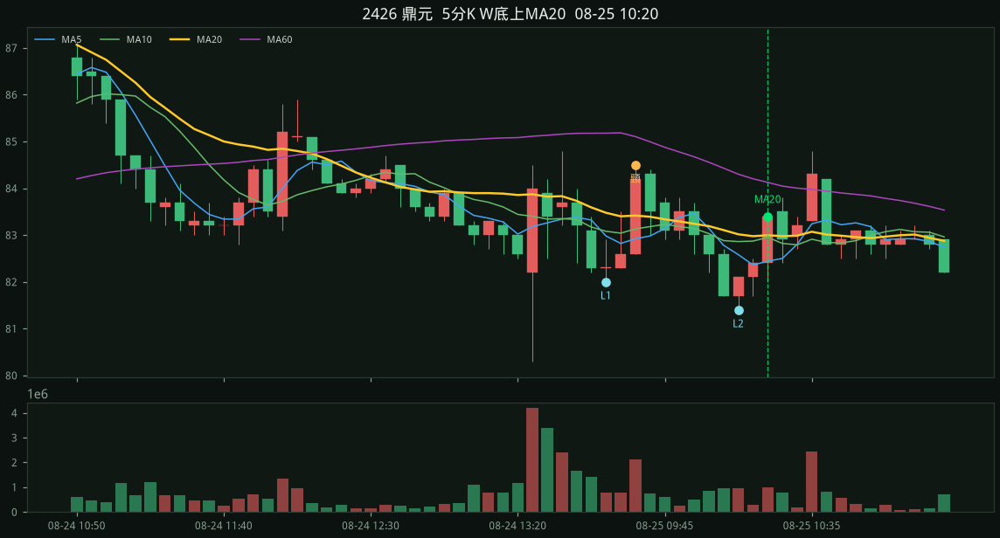
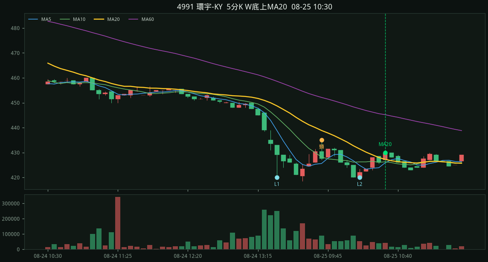
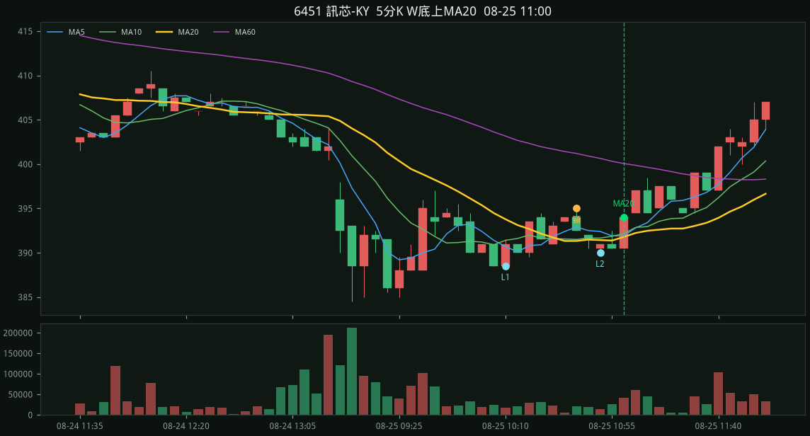
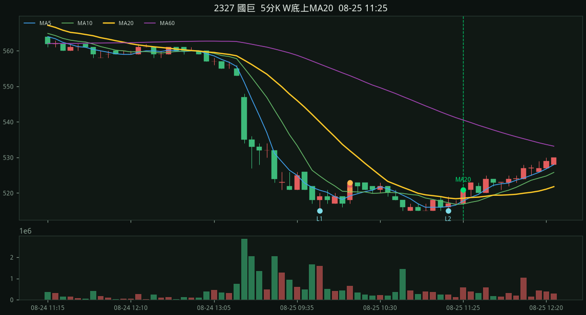
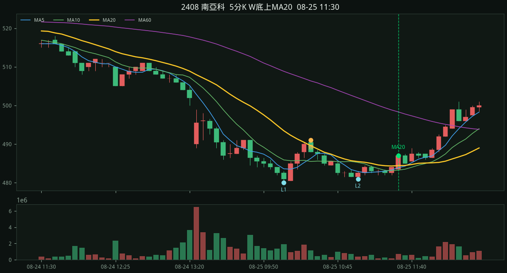
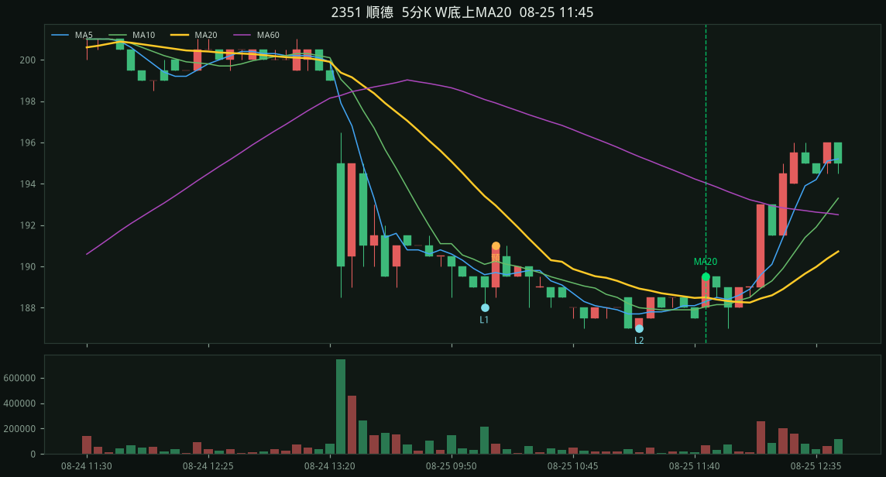

#1 · 6830 汎銓2026-08-25 10:10
452.00
收盤 452.00 MA20 449.95 L1 446.50 / L2 447.00 / 頸線 454.50 停損 446.50 量度 462.50 彈回 1.23% 站上 0.46% 深度 1.79% 跌幅 6.61%

2026-08-25 · 5d · 股價<700 · 嚴格 · 掃描 100 檔
規則：五分 K 做出 W 底（先大跌、兩個相近低點），收盤由下往上穿過五分 MA20 才通知。
嚴格：同一天做出 W、09:15 後、先跌 ≥5.5%、頸線深度 ≥1.2%、兩低點價差 ≤1.5%、從低點彈回 1.1%～2.5%、收盤站上 MA20 ≥0.45%。對齊國巨 515/515→521、南亞科 480/481→487。
08-25 6830 汎銓、2426 鼎元、3450 聯鈞、4991 環宇-KY、6451 訊芯-KY、2327 國巨、2408 南亞科、2351 順德、5608 四維航
收盤 452.00 MA20 449.95 L1 446.50 / L2 447.00 / 頸線 454.50 停損 446.50 量度 462.50 彈回 1.23% 站上 0.46% 深度 1.79% 跌幅 6.61%
收盤 83.40 MA20 82.99 L1 82.00 / L2 81.40 / 頸線 84.50 停損 81.40 量度 87.60 彈回 2.46% 站上 0.49% 深度 3.81% 跌幅 7.00%

收盤 495.50 MA20 492.43 L1 485.50 / L2 486.50 / 頸線 500.00 停損 485.50 量度 514.50 彈回 2.06% 站上 0.62% 深度 2.99% 跌幅 9.99%

收盤 430.00 MA20 427.25 L1 420.00 / L2 420.00 / 頸線 435.00 停損 420.00 量度 450.00 彈回 2.38% 站上 0.64% 深度 3.57% 跌幅 9.52%

收盤 394.00 MA20 391.77 L1 388.50 / L2 390.00 / 頸線 395.00 停損 388.50 量度 401.50 彈回 1.42% 站上 0.57% 深度 1.67% 跌幅 5.66%

收盤 521.00 MA20 518.55 L1 515.00 / L2 515.00 / 頸線 523.00 停損 515.00 量度 531.00 彈回 1.17% 站上 0.47% 深度 1.55% 跌幅 9.51%

收盤 487.00 MA20 484.43 L1 480.00 / L2 481.00 / 頸線 491.00 停損 480.00 量度 502.00 彈回 1.46% 站上 0.53% 深度 2.29% 跌幅 7.92%

收盤 429.00 MA20 425.70 L1 423.00 / L2 424.50 / 頸線 430.00 停損 423.00 量度 437.00 彈回 1.42% 站上 0.78% 深度 1.65% 跌幅 7.68%

收盤 189.50 MA20 188.50 L1 188.00 / L2 187.00 / 頸線 191.00 停損 187.00 量度 195.00 彈回 1.34% 站上 0.53% 深度 2.14% 跌幅 7.49%

收盤 18.50 MA20 18.37 L1 18.30 / L2 18.20 / 頸線 18.60 停損 18.20 量度 19.00 彈回 1.65% 站上 0.72% 深度 2.20% 跌幅 6.87%